About
「PATISSERIE 水の輪郭」は、沖縄県うるま市昆布にある焼き菓子を中心とした小さなパティスリーです。
フランス菓子をベースに素材にこだわり、最適な技法で生きた香りのするフレッシュな菓子を提供致します。
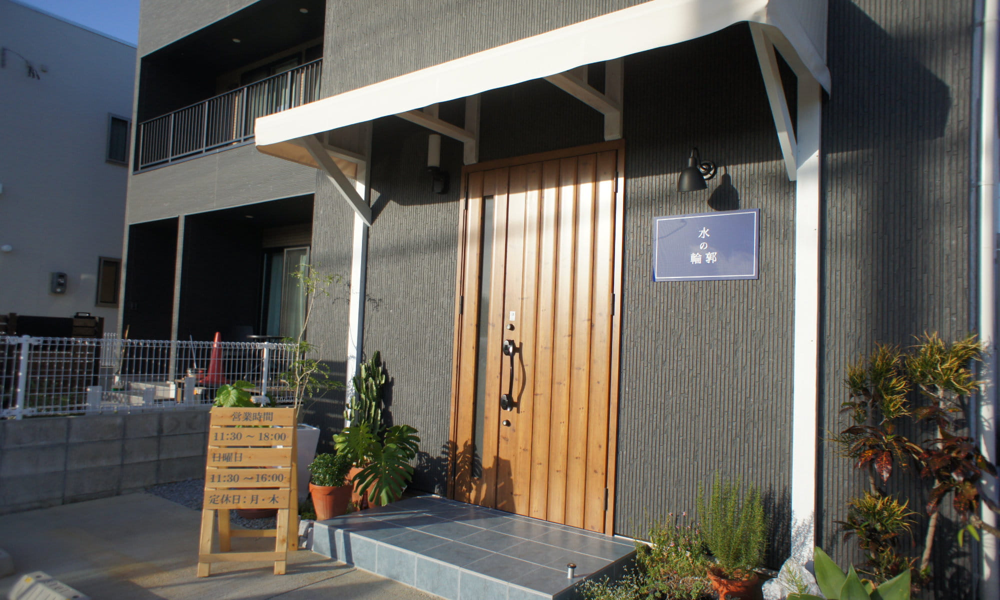
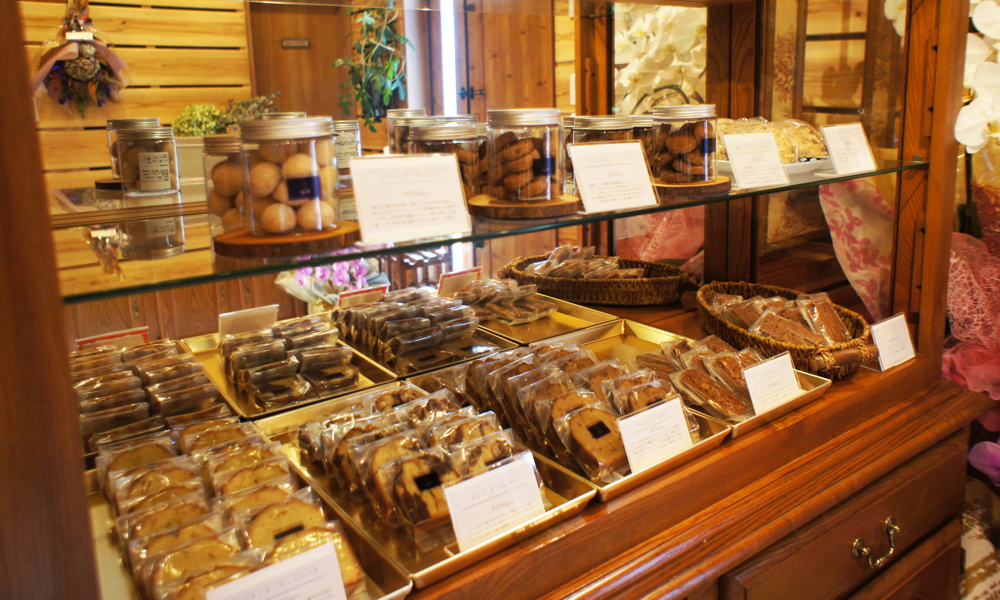
Goods
「PATISSERIE 水の輪郭」のグッズです。
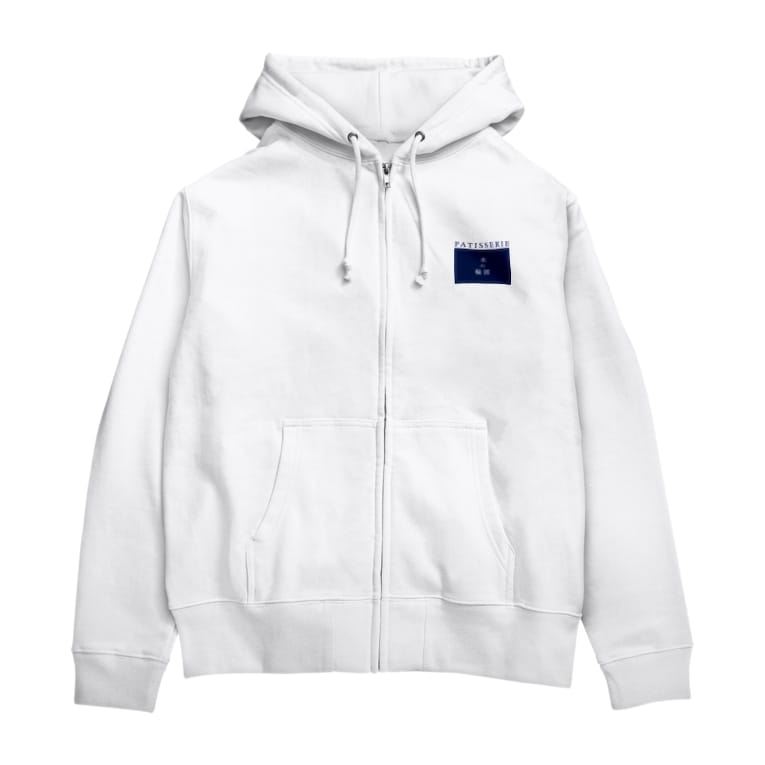
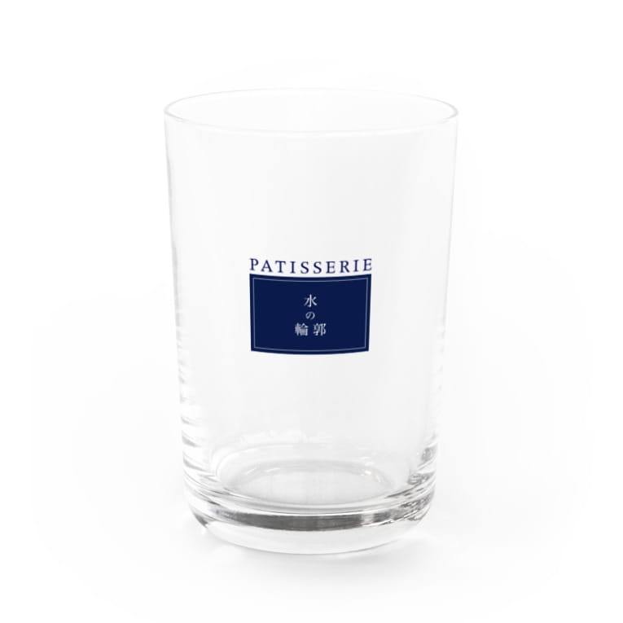
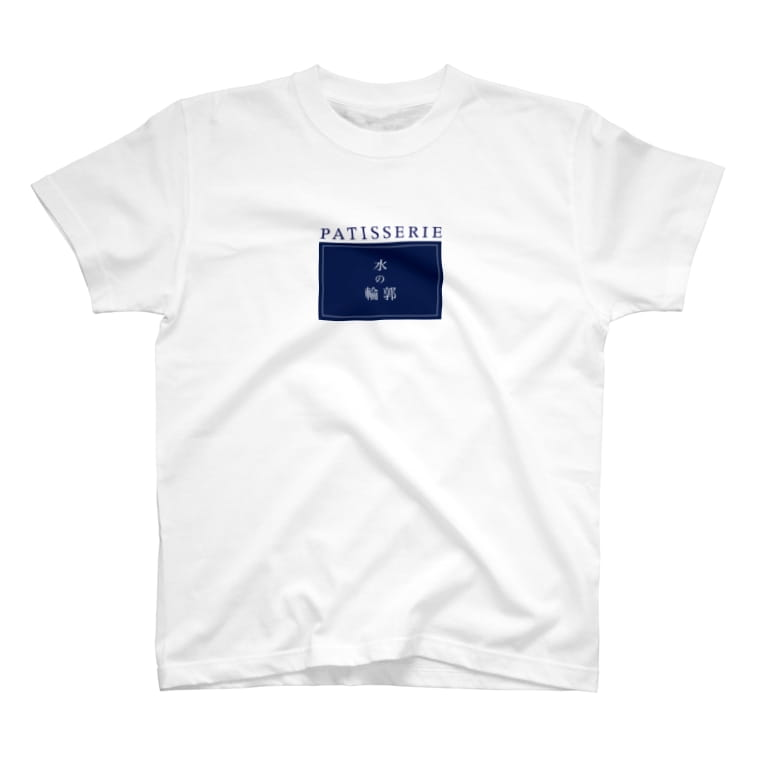
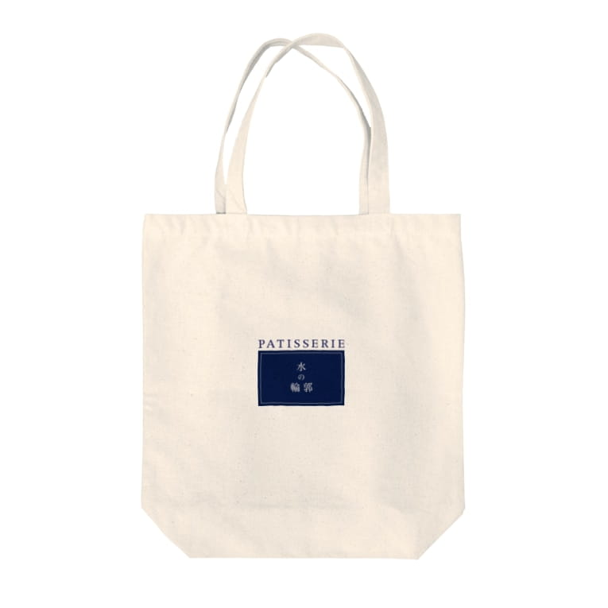
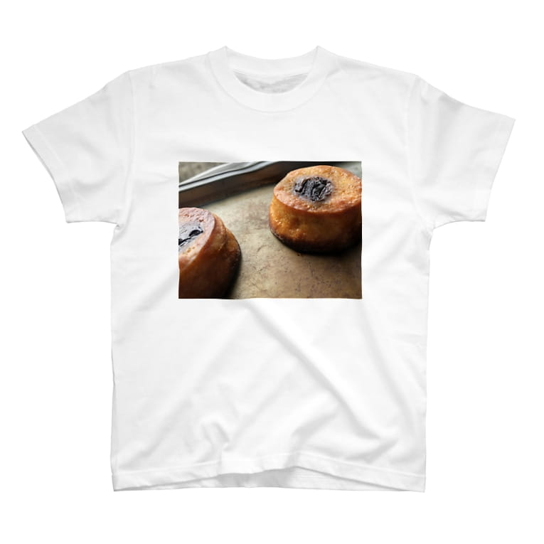
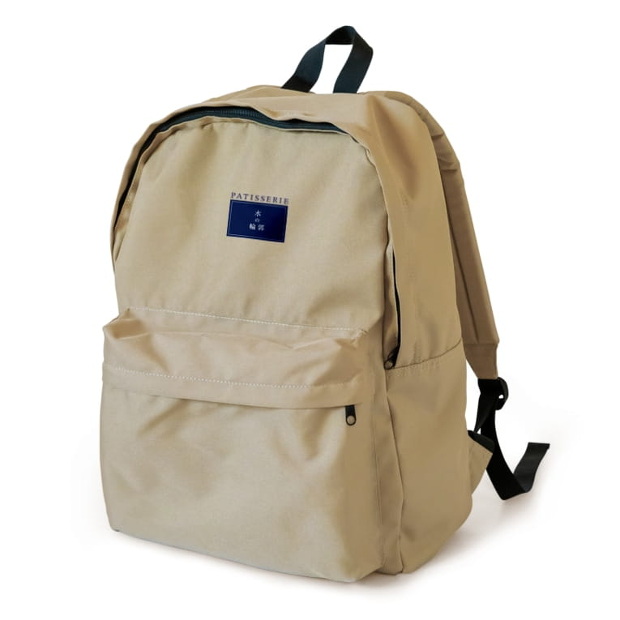
「PATISSERIE 水の輪郭」は、沖縄県うるま市昆布にある焼き菓子を中心とした小さなパティスリーです。
フランス菓子をベースに素材にこだわり、最適な技法で生きた香りのするフレッシュな菓子を提供致します。
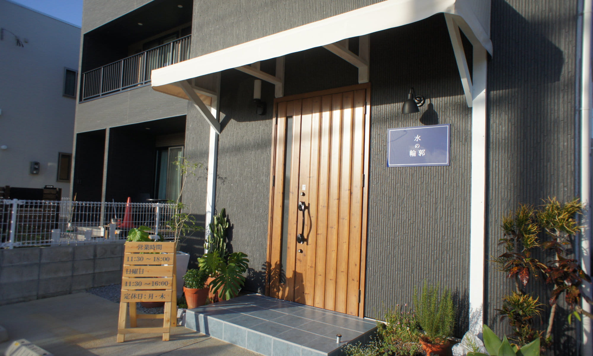
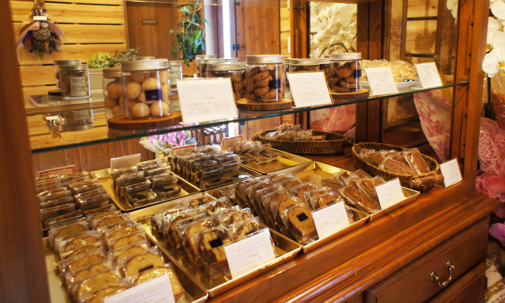
「PATISSERIE 水の輪郭」のグッズです。
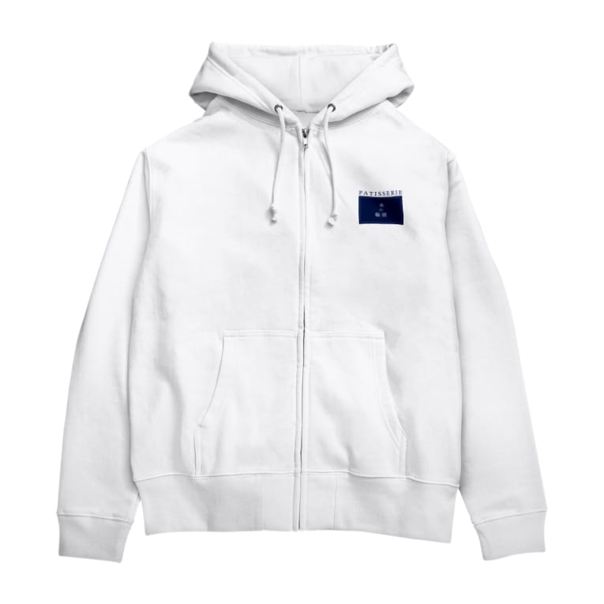
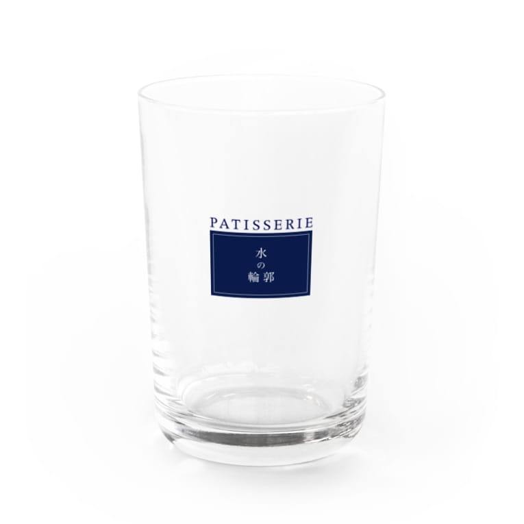
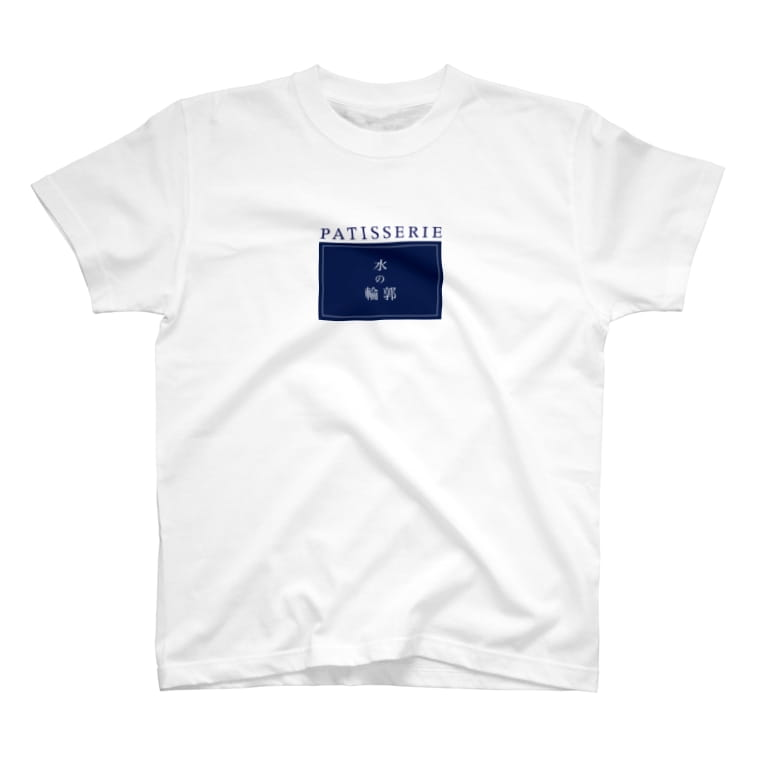
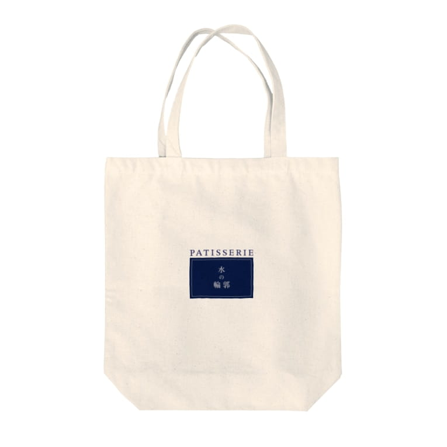
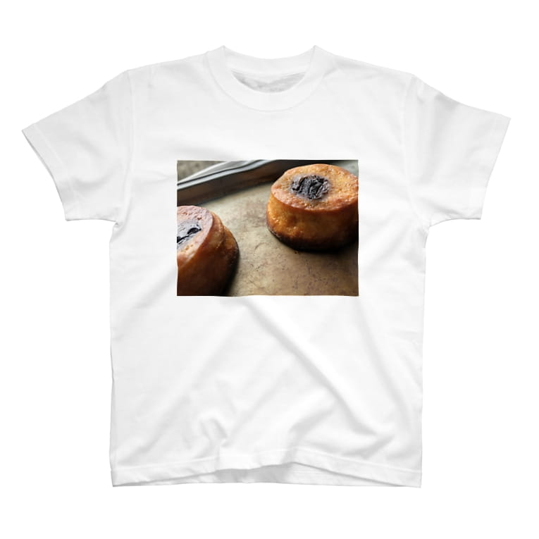
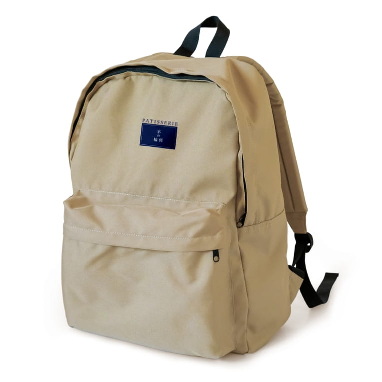